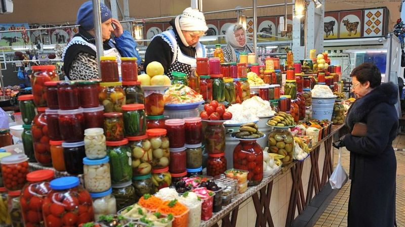
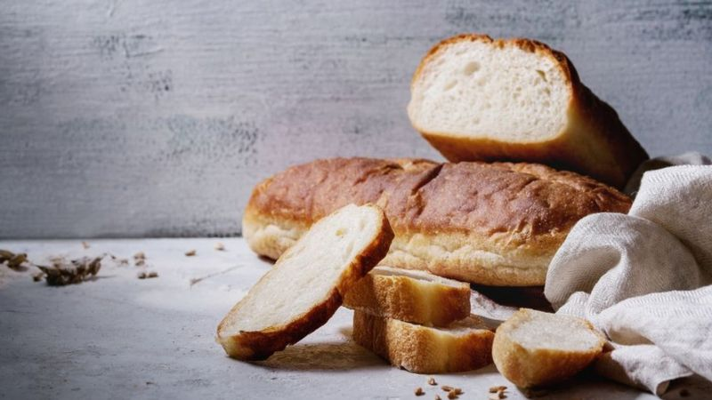
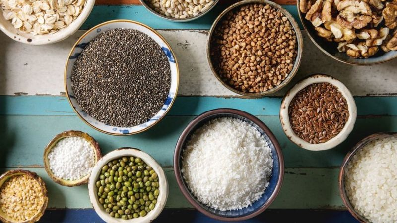

Експерти зі здорового харчування радять не ставати жертвами реклами, яка обіцяє здоров'я і довголіття, просуваючи певні продукти, а вибирати місцеві овочі, фрукти, крупи та іншу їжу.
ВВС News Україна зібрала декілька порад, як харчуватися з користю для здоров'я, але без шкоди для гаманця.
-
Суперфуди - це місцеві продукти
Дієтолог Оксана Скиталінська розповідає, що в багато українців є жертвами міфів щодо здорового харчування. Зокрема, ці міфи стосуються того, що їсти корисну їжу - дорого.
"Маркетинг нам пропонує продукти, які можна продати дорого, приписуючи їм певні властивості. Це так звані суперфуди - манго, ягоди годжі, чіа, чай матча та інші", - каже пані Скиталінська.За її словами, часто популяризаторами таких суперфудів є блогери з тисячами підписників.
Таким чином, складається враження, що здорове харчування не є доступним і що за нього треба дорого платити, каже вона.
Дієтолог відстоює думку, що для людини найкорисніша - локальна їжа.
"До цієї їжі звикли наші предки, навіть ферменти, які виробляються в організмі, налаштовані на краще перетравлення цих продуктів", - каже Оксана Скиталінська.
Однак, додає вона, це не означає, що "в нашому раціоні не може бути бразильських горіхів чи авокадо".
-
Різноманітна і сира
Їжа має бути різноманітною - це овочі, фрукти, зелень, ягоди, горіхи та насіння.
"У нас немає кумквата, але у нас є буряк", - каже пані Скиталінська і радить їсти різнокольорові овочі, які є корисними, смачними і дешевими водночас, - це морква, буряк, капуста, цибуля, гарбуз.
"Особливо цінними є квашені або ферментовані продукти, мочені, як їх ще називають, - капуста, огірки, помідори. Це корисно для кишкової мікробіоти, яка і формує наш імунітет", - пояснює Оксана Скиталінська.
Дієтолог нагадує пропорції повноцінного прийому їжі: половину тарілки мають займати овочі та фрукти, третину - круп'яні вироби, решту - білкові продукти (сири, яйця, нежирне м'ясо, риба, білки рослинного походження - бобові). Їжа має бути правильно приготована - тоді вона найздоровіша.
"Тому варимо або запікаємо, але не смажимо. Навіть коли смажимо на корисних оліях, така їжа втрачає свої поживні властивості", - додає вона.
"Протушкували чи легко відварили овочі, поклали шматочок м'яса чи яйце, додали або ні олії - і маємо повноцінний сніданок. Або протушкували помідори, цибулю, вибили яйце, притрусили зеленню, а на десерт - ягоди", - розповідає дієтолог.
Водночас "золоте правило" Оксани Скиталінської: усе що можна з'їсти сирим - треба з'їсти сирим.
"Ми думаємо, що броколі треба їсти лише вареною, але її можна з'їсти сирою. Як і гарбуз, моркву, буряк. Доповнюємо це хумусом. Нарізаємо брусочками овочі і вмочуємо в хумус і жуємо. Дуже смачно і суперкорисно", - каже дієтолог
-
Без голубців та вареників
Пані Скиталінська також радить не витрачати багато часу на приготування їжі. Дуже складні рецепти - це не стратегія здорового харчування, вважає вона.
"Замість того, аби ліпити вареники та крутити голубці, людина може з'їсти сирі овочі, а цей час використати на пізнання чогось нового і фізичну активність", - додає дієтолог і нагадує, що харчування - це інструмент, а не мета
"Їжа має бути простою та промислово необробленою. Чим більше з продуктом щось робили, тим він шкідливіший і дорожчий. Якщо ви не впевнені у складі продукту, краще його не брати", - додає Ольга Ільюхіна. Вона є автором освітнього проєкту "Здорове харчування для дітей" та онлайн-курсу для дорослих "4 кроки до здорового харчування" на Prometheus.
Пані Ільюхіна вказує на те, що українці вживають забагато хліба, солодощів, солі, смаженої їжі та алкоголю. Водночас у їхньому раціоні замало фруктів, цілозернових злаків, бобових, горіхів та риби.
Вона радить зменшити кількість солодощів у раціоні, натомість збільшувати споживання фруктів та овочів до 300-500 г в день. "Яблуко, буряк, селера, редька, капуста - варіть, печіть, додавайте в супи та борщі. Сезонні овочі та фрукти купуйте на ринках та у фермерів. Також доступними є морожені фрукти і ягоди", - розповідає експертка.
Водночас варто бути обережними з картоплею, бо її часто переїдають. Оптимально їсти картоплю - 2-3 рази на тиждень - печену, варену, гарно охолоджену - в салат, додає пані Ільюхіна.
-
Забагато солі й цукру
60% солі ми отримуємо не з домашньої сільнички, а з перероблених продуктів, каже Ольга Ільюхіна. Зокрема, з перероблених м'ясних виробів (ковбаси та сосиски) і хліба.
Найкорисніший для нашого організму цілозерновий хліб
Українці з'їдають в середньому пів кілограма хліба щоденно, а норма для жінки - 70 г, для чоловіка - 90 грамів. Експерти радять обирати хліб з цілозернового борошна та висівок, який здебільшого коштує дешевше, аніж білий хліб чи інша здоба. Ще двічі на тиждень треба їсти рибу. І не варто шукати лосося чи форель, коли доступнішою і не менш корисними і смачними є оселедець, хек та скумбрія, які можна придбати від 40 до 80 грн/кг.
Ольга Ільюхіна нагадує, що до свого раціону варто ввести бобові, про які часто забувають. "Українці в середньому їдять 9 г бобових на день. А МОЗ рекомендує 75 грамів сухих бобових щоденно", - розповідає експертка.
"Сочевиця, квасоля, горох доступніші за ціною, ніж м'ясо, і замінюють його. Це нежирний білок рослинного походження. З бобових можна робити салати, з нуту - популярний нині хумус, супи та навіть цукерки", - розповідає пані Ільюхіна і ділиться рецептом: змолоти разом квасолю, какао, банан і фініки.
-
Горіхи та зернята
"Навіщо нам чіа за 120 грн, коли у нас є льон, який можна купити від 25 грн за кілограм. Його треба на ніч замочити, перебити в блендері і додавати в каші", - каже пані Ільюхіна. Експертка зі здорового харчування нагадує, що доросла людина має щодня з'їдати жменьку зернят і горіхів.
"У мене на столі завжди є льон і кунжут. А також соняшникове, гарбузове насіння, яке додаю до каш та салатів", - каже Ольга Ільюхіна.
Експерти радять не шукати цілющих властивостей лише в екзотичних продуктах. Адже багато корисних речовин є в продуктах, до яких ми звикли змалечку.
"Тепер на прилавках магазинів з'явилася кіноа. Але приблизно схожий склад мікроелементів є у нашій гречці", - нагадує Ольга Ільюхіна.
Насіння чіа можна замінити зернятами льону
-
Здорова їжа — доступна
Міф про дорожнечу здорового харчування минулого року спростовувала тодішній міністр охорони здоров'я Уляна Супрун. Як приклад дешевих і корисних овочів, пані Супрун називала моркву, буряк, кольрабі, коренеплоди селери та пастернаку, цибулю, гарбуз і капусту.
"Коли ми говоримо "здорове харчування", то маємо на увазі не розкручені та дорогі авокадо, годжі, чіа, кіноа і лосося, а рідні та доступні сало, яйця, смородину, гречку, гарбузи, оселедці та льон. І купу інших продуктів вартістю до 50 гривень/кг", - йшлося у дописі Уляни Супрун у Facebook.
За її словами, нездорова їжа є доступнішою передусім фізично, а потім економічно. "Простіше купити шоколадний батончик, аніж курагу, хоча кілограм батончиків дорожчий за кілограм кураги", - переконувала тодішня очільниця МОЗ.
Змінюйте свої пріоритети й шукайте здорові варіанти щодня, закликала пані Супрун, адже здорова їжа — доступна.
Хочете отримувати найважливіші новини в месенджер? Підписуйтеся на наш Telegram або Viber!